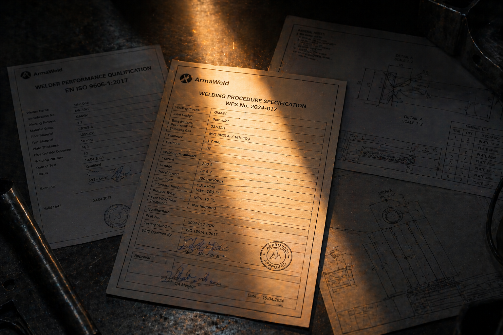

Uluslararası standartlarla denetlenen üretim süreçleri, belgeli personel ve tam izlenebilir kayıt sistemi.

Belgelendirme · Standartlara UygunlukSTD — 001 / 006
Kaynaklı imalatın temel kalite çerçevesi. Kaynak mühendisi yönetimi, WPS, WPQR, kaynakçı sertifikası, muayene planı ve izlenebilirliğin tamamını kapsar.
Taşıyıcı çelik yapı imalatı için gerekli fabrika üretim kontrolü (FPC). EXC3 yüksek hasar sonuçlu yapılar için.
Süreç yönetimi, müşteri odaklılık, risk temelli düşünce ve sürekli iyileştirmeyi temel alan temel yönetim çerçevemiz.
15614-1 — Çelik, nikel ve nikel alaşımları için ark kaynağı WPQR. S235'ten S960QL'e, P-grubu basınçlı kap çeliklerine kadar her malzeme grubu için onaylı prosedür.
15614-2 — Alüminyum ve alüminyum alaşımları için ark kaynağı WPQR. EN AW-5754 (AlMg3) ve EN AW-6082 (AlSi1MgMn) kapsamında, TIG (141) yöntemi ile tam nüfuziyetli alın kaynakları.
9606-1 — Çelik ve paslanmaz çelikte kaynakçı sertifikası. MAG (135), TIG (141), MMA (111) proseslerinde proses, malzeme grubu, pozisyon ve kalınlığa göre ayrı yetki. Her 6 ayda gözden geçirilir, 2 yılda bir yenilenir.
9606-2 — Alüminyum alaşımları için TIG (141) kaynakçı sertifikası. FM21 (Al-Mg) ve FM22 (Al-Si-Mg) malzeme gruplarında, PA · PB · PF pozisyonlarında geçerli.
NDT muayenelerini yapan, sonuçlarını yorumlayan ve raporlayan personel için uluslararası yeterlilik standardı.
TRC.CHAIN — 7 LINKS
İzlenebilirlik, aşağıdaki yedi halkadan herhangi biri eksik olduğunda kaybolur. Bizim sistemimizde her halka, bir sonrakinin kaydı olmadan işleme başlayamaz.
DOC.SIM — INTERACTIVE
Sol menüdeki sekmelerden; sizinle teslim edeceğimiz belge paketindeki örnek dokümanları inceleyebilirsiniz. Bunların tümü, her iş emrinizle birlikte dijital bir dosya olarak tarafınıza gönderilir.
KPI — 2026 YTD
WPS özeti, WPQR referansı, malzeme sertifikası ve NDT raporundan oluşan örnek teknik dosyayı indirin. Her proje tesliminde bu paketin dolu versiyonunu alırsınız.